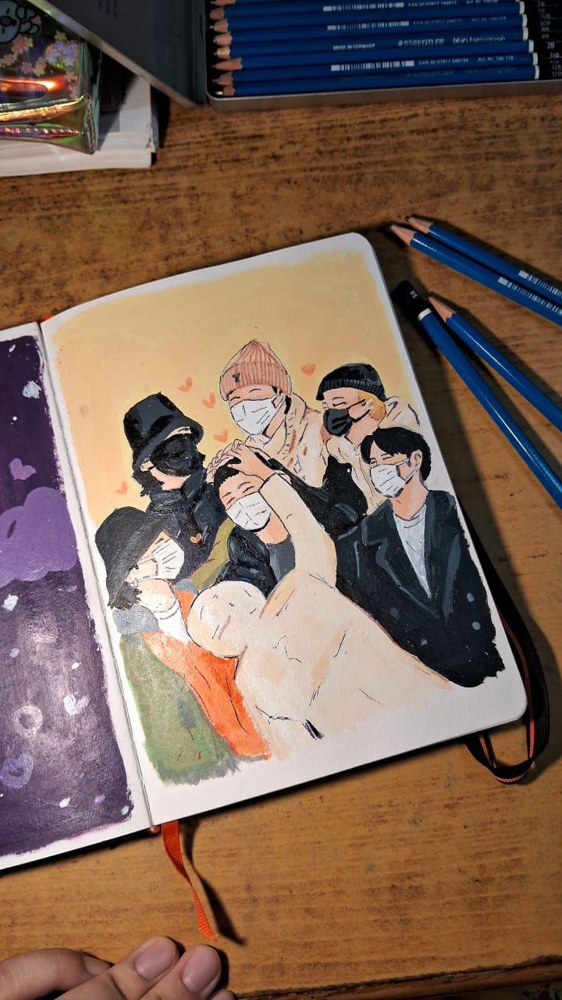
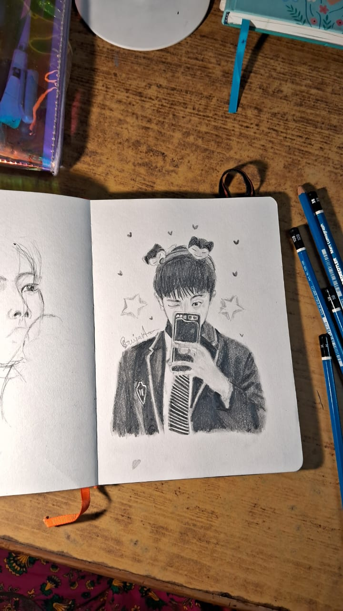
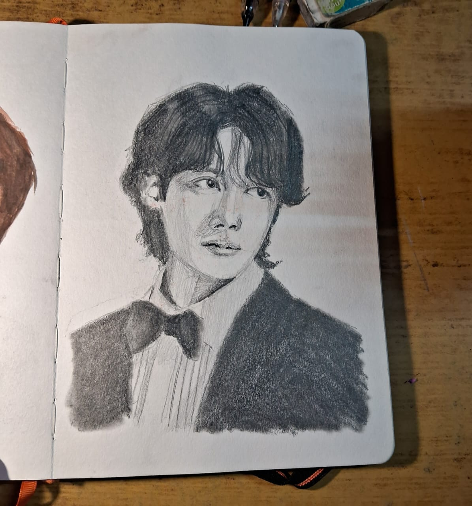
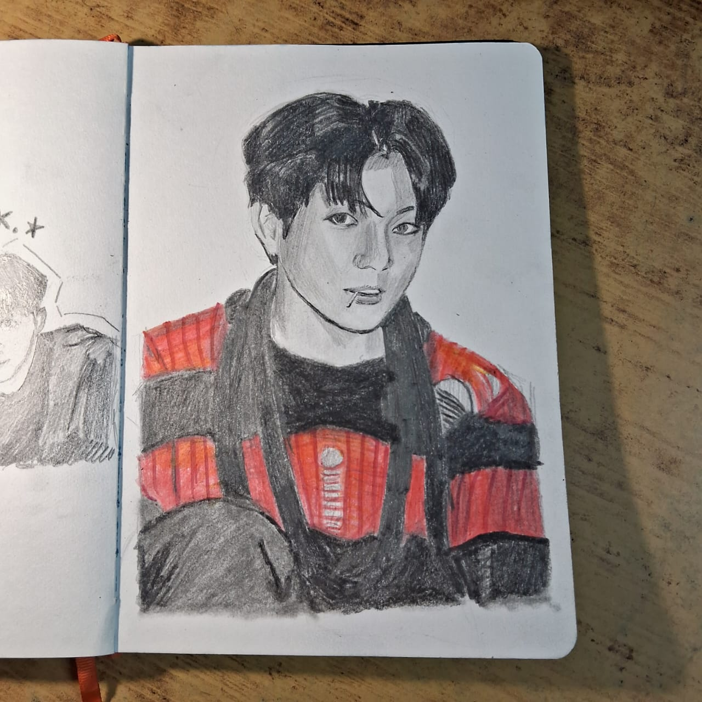

BTS acrylic painting
- vibrant colors and heart warming scene . The portrait is based on the enlistment day of oldest member of the band Jin. The members came to support him on his big day it shows their heartwarming and playful vibe of the group.

BTS RM pencil sketch
- cute and playful vibe . This one is refrenced from the band's leadear's insta posts. It has its own playful vibe and charm. the snorlax headband and wink makes it more cute.

BTS J-hope pencil sketch
- a sketch with smooth soft shading work , brings out the romantic vibes.The work consists of clean finished texture.

Jungkook War of Hormone
The portrait is inspired by jungkook's look from the song War of Hormone. The red between the whole black sketch gives a whole dark vibe.